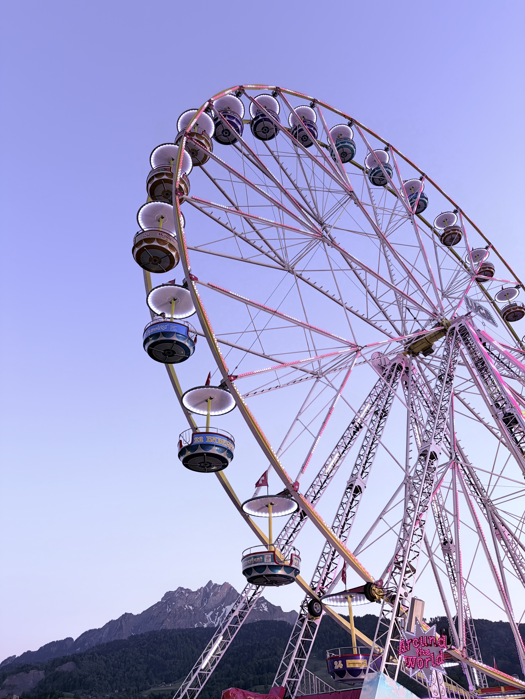

Si
Si
Making sense of
numbers and landscapes.
01
Now
What I'm doing lately
→
02
Journey
Professional path
→
03
Decoding
Research & data
→
04
Nature Never Judges
Photography & hiking
→
05
Wandering
Reflections
→
06
Rabbit Holes
Books & ideas
→

V3 — Horizon · 照片满宽底部